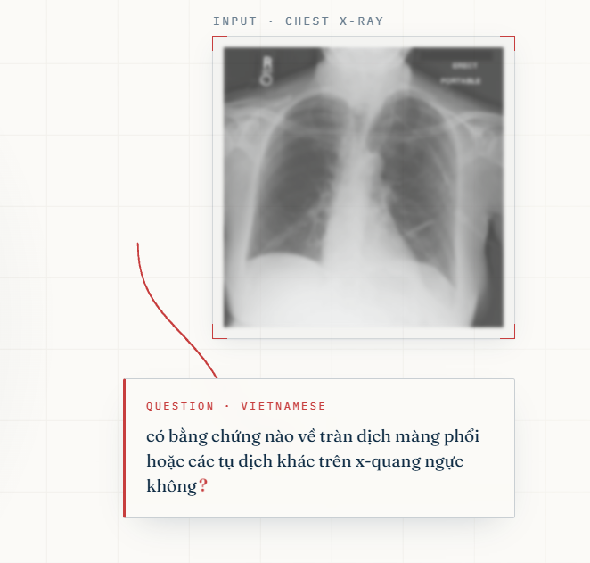

Deep Learning · Medical AIAdvancing Vietnamese Visual Question Answering for Healthcare
Lead Author · Architecture, Data Pipeline, Experiments
The Problem
Vietnamese clinicians work in their own language, but state-of-the-art medical AI is trained for English. Multilingual encoders systematically degrade on Vietnamese clinical text, and no public Vietnamese chest-X-ray QA corpus existed.
The Solution
An end-to-end pipeline combining two frozen vision encoders (BiomedCLIP + DINOv3) with a Vietnamese clinical language model (ViHealthBERT) and a 4-bit quantized Qwen2.5-3B decoder, connected by a custom Multi-Scale Cross-Attention adapter and trained with a novel Clinical-Token Priority Loss.
Key Achievement
On an 800 samples test set, our 3B-parameter system beats every published 2B–4B baseline (Qwen2.5-VL, InternVL3, Gemma-3) across ROUGE-L, BLEU-4, and Medical Diagnostic Recall, trained on a single Kaggle T4 GPU.
My Role
Lead author. Designed the four-module architecture, built the Vietnamese-aware text pipeline (DP syllable re-segmenter, lexicon-driven preprocessing, augmentation), implemented CTPL loss, ran all four ablation experiments (E0–E3), and wrote the report.